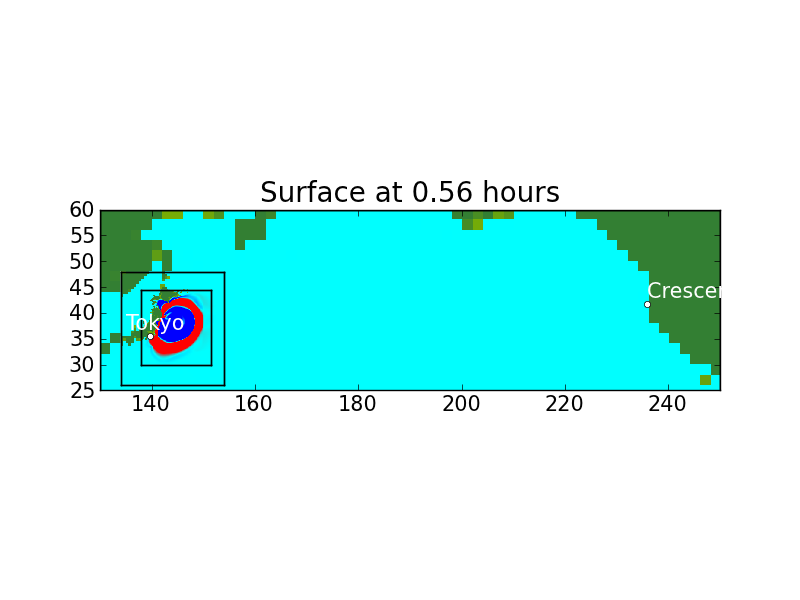

< < < Index > > >

Image source: /home/jonathan/research/clawTrunk/myclaw/ccTsunami/honshu/geoclaw/crescent-city/_plots/frame0001fig0.png
Other figures at this time: full domain Zoom All Figures
Other frames: 0 1 2 All Frames